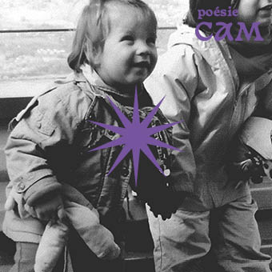
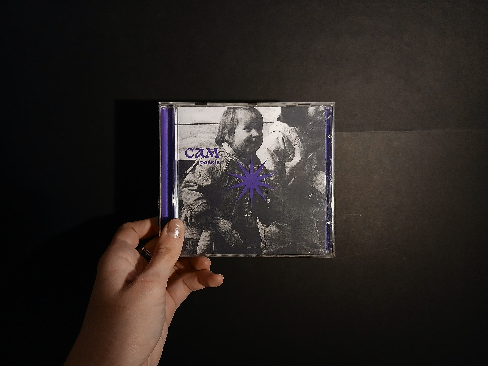
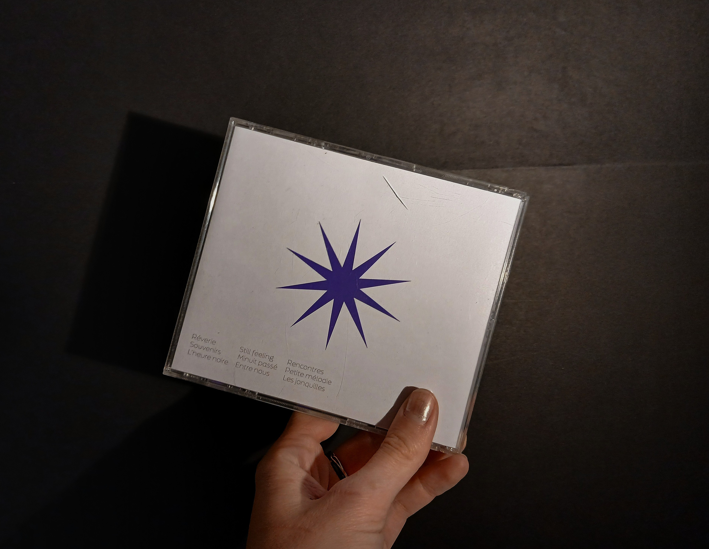
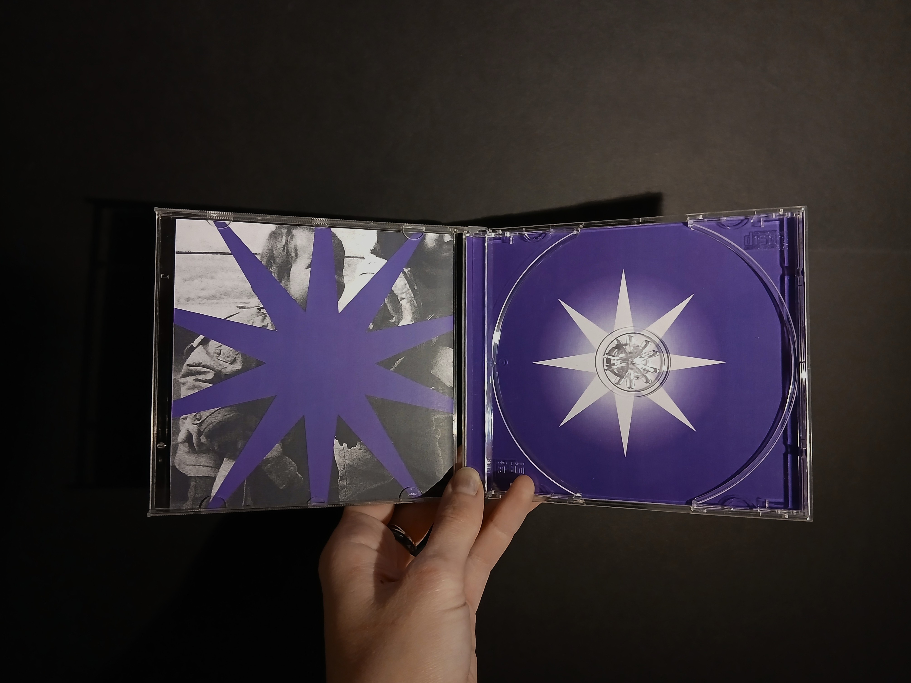
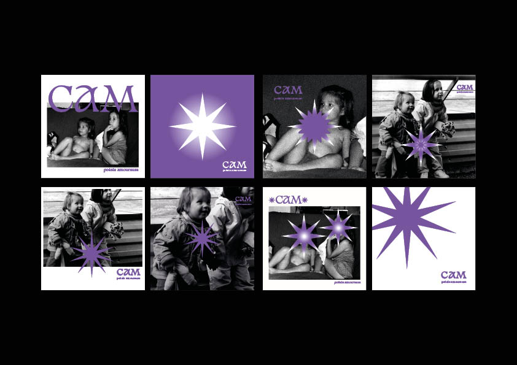

-CARTES PHILOSPHIQUES-
game of cards for children
March 2025
Following a meeting with Chiara Pastorini, a specialist in explaining philosophy to young children.
I recreated the visuals for the game 'MON ATELIER PHILO', which aims to introduce children to certain philosophical concepts. Each card represents one of these notions.
In terms of the project's realisation, I turned to art, taking inspiration from existing paintings that already embodied the notions. Following some artistic experimentation and cutting, I obtained a collection of cards for the game.




